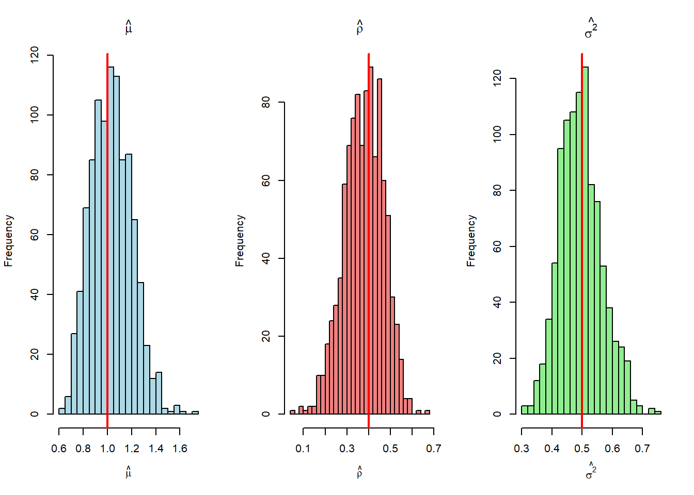

Code
setwd("C:/Users/diego/OneDrive/PES/10 Programacion II/PROGRA2/PS3/")
rm(list = ls()) # Limpiar el entorno de R
graphics.off() # Cerrar gráficos abiertos
set.seed(123) # Fijar semilla para reproducibilidadIntroducción a R - Programación II
Programa de Estudios Superiores, Banco de Guatemala, 2025
Este primer bloque de código prepara el entorno de R para el análisis.
setwd("C:/Users/diego/OneDrive/PES/10 Programacion II/PROGRA2/PS3/")
rm(list = ls()) # Limpiar el entorno de R
graphics.off() # Cerrar gráficos abiertos
set.seed(123) # Fijar semilla para reproducibilidadSe define la función log_verosimilitud_AR1 para calcular el logaritmo de la verosimilitud de un proceso AR(1).
# Cargamos la librería necesaria
library(ggplot2)
#Creación de la función de log-verosimilitud de un AR(1)
log_verosimilitud_AR1 <- function(theta, y) {
#Definimos los parámetros de theta
mu <- theta[1]
rho <- theta[2]
sigma2 <- theta[3]
if(sigma2 <= 0 || abs(rho) >= 1) return(-Inf) # Verificamos que sigma2 > 0 y |rho| < 1
# Obtenemos el tamaño de la muestra
T <- length(y)
# Extraemos la primera observación y el resto de la serie de tiempo
y1 <- y[1]
y_t <- y[2:T]
y_t_1 <- y[1:(T-1)]
# Calculamos cada parte de la fórmula de log-verosimilitud
# Parte 1: Contribución de la primera observación (y1)
# Corresponde a los términos: -0.5*log(2*pi) - 0.5*log(sigma2/(1-rho^2)) - ...
logL_y1 <- -0.5 * log(2 * pi) - 0.5 * log(sigma2 / (1 - rho^2)) -
((y1 - (mu / (1 - rho)))^2) / (2 * sigma2 / (1 - rho^2))
# Parte 2: Contribución del resto de las observaciones (de y2 a yT)
# Corresponde a los términos: -((T-1)/2)*log(2*pi) - ((T-1)/2)*log(sigma2) - sum(...)/2*sigma2
# Calculamos los residuos (errores) de las predicciones del modelo
residuos <- y_t - mu - rho * y_t_1
logL_resto <- -((T - 1) / 2) * log(2 * pi) - ((T - 1) / 2) * log(sigma2) -
sum(residuos^2) / (2 * sigma2)
# Sumamos ambas partes para obtener la log-verosimilitud total
logL_total <- logL_y1 + logL_resto
return(logL_total)
}Se simula una serie de tiempo AR(1) con parámetros poblacionales conocidos.
# Parámetros verdaderos (poblacionales)
mu_inicial <- 1.0
rho_inicial <- 0.4
sigma2_inicial <- 0.5
T <- 100
# Creación de un vector vacío para guardar nuestros datos simulados
y_simulado <- numeric(T)
epsilon_t <- is.numeric(T)
# Generamos el valor inicial y1 a partir de su distribución teórica
# y1 ~ N( mu/(1-rho), sigma2/(1-rho^2) )
y_simulado[1] <- rnorm(1, mean = mu_inicial / (1 - rho_inicial),
sd = sqrt(sigma2_inicial / (1 - rho_inicial^2)))
epsilon_t[1] <- 0 # No hay error para t=1 ya que es dado
# Generamos el resto de los valores (y2 hasta yT) usando un ciclo
# yt = mu + rho*y_{t-1} + epsilon_t
for (t in 2:T) {
# epsilon_t es una variable aleatoria de distribución normal
epsilon_t[t] <- rnorm(1, mean = 0, sd = sqrt(sigma2_inicial))
# Calculamos el valor de yt=mu + rho*yt-1 + epsilon_t
y_simulado[t] <- mu_inicial + rho_inicial * y_simulado[t - 1] + epsilon_t[t]
}Mostramos los valores simulados vector de \(\varepsilon\)
#Generación del vector Et
epsilon_t [1] 0.000000000 -0.162760064 1.102173219 0.049856962 0.091420234
[6] 1.212734082 0.325916975 -0.894533378 -0.485678309 -0.315130601
[11] 0.865556540 0.254426797 0.283388210 0.078264499 -0.393039036
[16] 1.263538396 0.352033449 -1.390608327 0.495933514 -0.334314010
[21] -0.755065384 -0.154131540 -0.725494703 -0.515403931 -0.441969505
[26] -1.192672278 0.592404900 0.108451172 -0.804784346 0.886581033
[31] 0.301555743 -0.208647047 0.632949425 0.620934144 0.580945554
[36] 0.486942193 0.391678929 -0.043778190 -0.216348274 -0.269033625
[41] -0.491232016 -0.147019717 -0.894770341 1.533683471 0.854158120
[46] -0.794157695 -0.284882599 -0.329975165 0.551518624 -0.058950832
[51] 0.179123239 -0.020185604 -0.030313991 0.967747956 -0.159644195
[56] 1.072306648 -1.095133610 0.413384347 0.087578176 0.152693748
[61] 0.268445653 -0.355196320 -0.235613201 -0.720241561 -0.757870844
[66] 0.214627161 0.316932174 0.037479648 0.652141581 1.449628783
[71] -0.347211467 -1.632828971 0.711164531 -0.501480668 -0.486495558
[76] 0.725188470 -0.201364924 -0.863177772 0.128200920 -0.098211024
[81] 0.004075895 0.272434384 -0.262096222 0.455643027 -0.155907543
[86] 0.234605277 0.775582304 0.307719783 -0.230468434 0.812329657
[91] 0.702513314 0.387775209 0.168808829 -0.443996644 0.962126573
[96] -0.424447625 1.546677992 1.083719367 -0.166665322 -0.725789179Mostramos los valores simulados vector de \(yt\)
#Generación del vector Yt (incluye y1)
y_simulado [1] 1.2342503 1.3309401 2.6345492 2.1036767 1.9328909 2.9858904 2.5202732
[8] 1.1135759 0.9597520 1.0687702 2.2930646 2.1716526 2.1520493 1.9390842
[15] 1.3825946 2.8165763 2.4786640 0.6008573 1.7362764 1.3601966 0.7890132
[22] 1.1614738 0.7390948 0.7802340 0.8701241 0.1553774 1.6545558 1.7702735
[29] 0.9033251 2.2479111 2.2007202 1.6716410 2.3016058 2.5415765 2.5975761
[36] 2.5259727 2.4020680 1.9170490 1.5504713 1.3511549 1.0492299 1.2726723
[43] 0.6142986 2.7794029 2.9659193 1.3922100 1.2720014 1.1788254 2.0230488
[50] 1.7502687 1.8792307 1.7315067 1.6622887 2.6326634 1.8934212 2.8296751
[57] 1.0367364 1.8280789 1.8188097 1.8802176 2.0205327 1.4530168 1.3455935
[64] 0.8179958 0.5693275 1.4423582 1.8938754 1.7950298 2.3701535 3.3976902
[71] 2.0118646 0.1719169 1.7799313 1.2104918 0.9977012 2.1242689 1.6483427
[78] 0.7961593 1.4466646 1.4804548 1.5962578 1.9109375 1.5022788 2.0565545
[85] 1.6667143 1.9012910 2.5360987 2.3221593 1.6983953 2.4916878 2.6991884
[92] 2.4674506 2.1557891 1.4183190 2.5294542 1.5873340 3.1816116 3.3563640
[99] 2.1758803 1.1445629Se utiliza la función optim() para encontrar los parámetros que maximizan la función de log-verosimilitud para los datos simulados.
# Valores iniciales para el optimizador, como se indica en el PDF
valores_theta <- c(0.5, 0.5, 0.5)
# Usamos optim() para encontrar los parámetros que maximizan la log-verosimilitud
# 'par' son los valores iniciales
# 'fn' es la función a optimizar
# 'y' son los datos
mle_resultado <- optim(par = valores_theta, # Valores iniciales
fn = log_verosimilitud_AR1, # Función de log-verosimilitud
y = y_simulado, # Datos simulados
method = "L-BFGS-B", # Método de optimización con restricciones
lower = c(-Inf, -0.99, 1e-6), # Restricciones para rho y sigma2
upper = c(Inf, 0.99, Inf), # Restricciones para rho
control = list(fnscale = -1) # Para maximizar la función
)
# Accedemos a los parámetros estimados están en $par (mu_hat, rho_hat, sigma2_hat)
theta_estimado <- mle_resultado$parImpresión de los resultados para comparar con los parámetros verdaderos
| Parametro | Valor_Verdadero | Valor_Estimado |
|---|---|---|
| \(μ\) (mu) | 1.0 | 1.1477 |
| \(ρ\) (rho) | 0.4 | 0.3515 |
| \(σ²\) (sigma2) | 0.5 | 0.4118 |
Se realiza un experimento de Monte Carlo para analizar las propiedades de los estimadores.
#Generamos la función para simular AR(1)
simular_AR1 <- function(T, mu, rho, sigma2) {
y <- numeric(T)
epsilon_t <- numeric(T)
y[1] <- rnorm(1, mean = mu / (1 - rho), sd = sqrt(sigma2 / (1 - rho^2)))
for (t in 2:T) {
epsilon_t <- rnorm(T, mean = 0, sd = sqrt(sigma2))
y[t] <- mu + rho * y[t - 1] + epsilon_t[t]
}
return(y)
}
# Número de repeticiones para el experimento de Monte Carlo.
R <- 1000
# Creación de vectores numéricos vacíos para almacenar las estimaciones de cada parámetro por simulación.
mu_hat_vec <- numeric(R)
rho_hat_vec <- numeric(R)
sigma2_hat_vec <- numeric(R)
# Define los valores iniciales (el "punto de partida") que usará el optimizador.
valores_theta <- c(0.5, 0.5, 0.5)
# Inicia el bucle que se ejecutará desde r=1 hasta R.
for (r in 1:R) {
# Simulación de Datos:
# En cada iteración, se genera una NUEVA serie de tiempo AR(1) de tamaño T.
y_r <- simular_AR1(T, mu_inicial, rho_inicial, sigma2_inicial)
# Estimación por Máxima Verosimilitud (MLE):
# Se utiliza la función optim() para encontrar los parámetros que maximizan la log-verosimilitud.
theta_r <- optim(
par = valores_theta, # Punto de partida para la búsqueda
fn = log_verosimilitud_AR1, # La función a maximizar
y = y_r, # Los datos simulados en esta iteración
method = "L-BFGS-B",
lower = c(-Inf, -0.99, 1e-6),
upper = c( Inf, 0.99, Inf),
control = list(fnscale = -1)
)
# Almacenamiento de Resultados:
# Extrae el vector de parámetros estimados ('$par') y los guarda en la posición 'r' de los vectores de resultados.
mu_hat_vec[r] <- theta_r$par[1]
rho_hat_vec[r] <- theta_r$par[2]
sigma2_hat_vec[r] <- theta_r$par[3]
}
# Cálculo del promedio de las R estimaciones para cada parámetro.
prom_mu <- mean(mu_hat_vec)
prom_rho <- mean(rho_hat_vec)
prom_s2 <- mean(sigma2_hat_vec)
# Cálculo de la desviación estándar de las R estimaciones.
sd_mu <- sd(mu_hat_vec)
sd_rho <- sd(rho_hat_vec)
sd_s2 <- sd(sigma2_hat_vec)Impresión de resultados con \(R = 1000\)
resultados_df2 <- data.frame(
Parametro = c("$μ$ (mu_hat)", "$ρ$ (rho_hat)", "$σ²$ (sigma2_hat)"),
Valor_Estimado = c(prom_mu, prom_rho, prom_s2)
)
knitr::kable(resultados_df2, digits = 4)| Parametro | Valor_Estimado |
|---|---|
| \(μ\) (mu_hat) | 1.0340 |
| \(ρ\) (rho_hat) | 0.3783 |
| \(σ²\) (sigma2_hat) | 0.4955 |
A continuación se muestran los histogramas con la distribución de los estimadores.
histogramas <- par(mfrow = c(1, 3))
# Histograma para mu_hat
hist(mu_hat_vec,
breaks = 30, # Número de barras.
main = expression(hat(mu)), # Título con formato matemático.
xlab = expression(hat(mu)), # Etiqueta del eje X.
col = "lightblue")
# Agrega una línea vertical en el valor verdadero para comparación visual.
abline(v = mu_inicial, col = "red", lwd = 2)
# Histograma para rho_hat
hist(rho_hat_vec,
breaks = 30,
main = expression(hat(rho)),
xlab = expression(hat(rho)),
col = "lightcoral")
abline(v = rho_inicial, col = "red", lwd = 2)
# Histograma para sigma2_hat
hist(sigma2_hat_vec,
breaks = 30,
main = expression(hat(sigma^2)),
xlab = expression(hat(sigma^2)),
col = "lightgreen")
abline(v = sigma2_inicial, col = "red", lwd = 2)
par(histogramas)Se aplica el modelo a datos reales de inflación y se define una función para calcular los errores estándar.
set.seed(123) # Fijar semilla para reproducibilidad
datos_inflacion <- read.csv("inflacion.csv")
# Extraer la columna de inflación como un vector numérico.
serie_inflacion <- as.numeric(datos_inflacion$inflacion)
Tn <- length(serie_inflacion)
# Establecer valores iniciales para los parámetros para el optimizador (mu, rho, sigma^2)
valores_iniciales <- c(mean(serie_inflacion), 0.5, var(serie_inflacion))
# Encontrar el estimador de máxima verosimilitud, theta_estimado.
mle_fit_inflacion <- optim(
par = valores_iniciales,
fn = log_verosimilitud_AR1,
y = serie_inflacion,
method = "L-BFGS-B", # Método que permite restricciones
lower = c(-Inf, -0.99, 1e-8), # Cotas inferiores para rho y sigma^2
upper = c(Inf, 0.99, Inf), # Cotas superiores
control = list(fnscale = -1), # Maximizar en lugar de minimizar
hessian = TRUE
)
theta_estimado <- mle_fit_inflacion$par
# DEFINICIÓN DE LA FUNCION QUE CALCULA LOS ERRORES ESTÁNDAR DE MÁXIMA VEROSIMILITUD
simular_se <- function(theta, y) {
J1 <- -mle_fit_inflacion$hessian
var_theta_hat <- solve(J1)
se_hat <- sqrt(diag(var_theta_hat))
return(se_hat)
}Se llama a la función y se presentan los resultados finales en una tabla.
se_hat <- simular_se(valores_iniciales, serie_inflacion)
# Data frame para mostrar los resultados de forma ordenada.
tabla_resultados <- data.frame(
Parametro = c("mu ($μ$)", "rho ($ρ$)", "sigma$^2$ ($σ²$)"),
Estimacion = theta_estimado,
Error_Estandar = se_hat
)
knitr::kable(tabla_resultados, digits = 4)| Parametro | Estimacion | Error_Estandar |
|---|---|---|
| mu (\(μ\)) | 0.1809 | 0.0845 |
| rho (\(ρ\)) | 0.9700 | 0.0128 |
| sigma\(^2\) (\(σ²\)) | 0.5379 | 0.0394 |